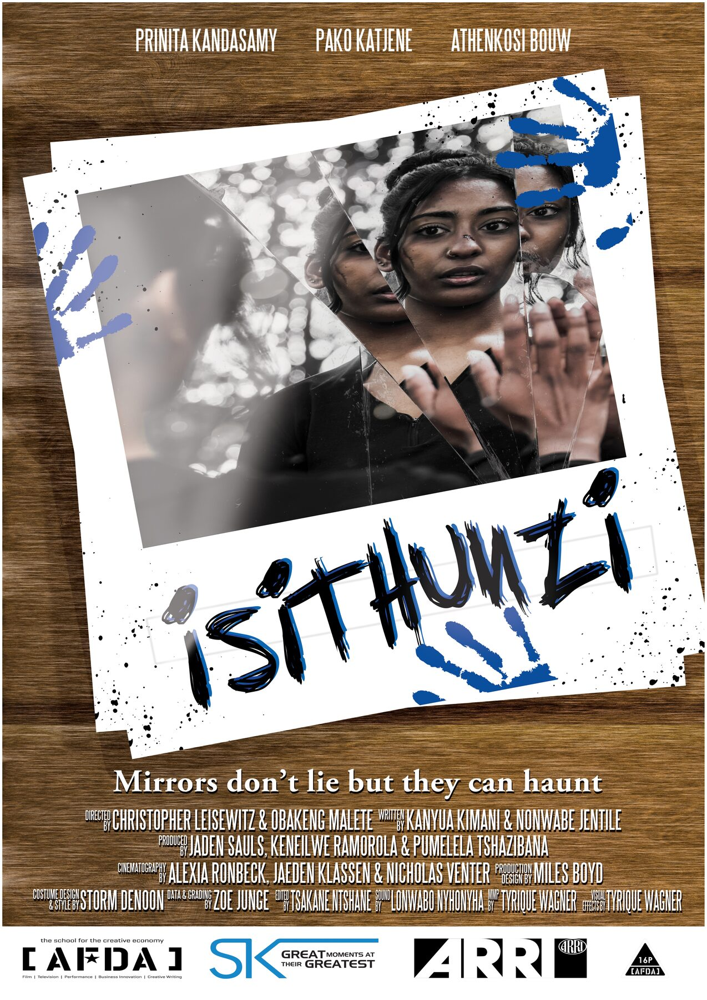

Her acting showreel sits here. The trailers below are the films, not the reel.
Credits
On record.

Public poster
2024 · Horror · 12 min · South Africa
isiThunzi
Also listed as Isithunzi. Two women leave for a cabin and meet a spirit tied to a past one of them has not finished with. A mirror. English. Filmed in Johannesburg. AFDA graduation film. Tagline on the poster: “Mirrors don’t lie but they can haunt.”
Prinita Kandasamy is billed first, with Pako Katjene and Athenkosi Bouw. A public post on the film credits her as Chitra. That is not written on the IMDb character field, so it is noted as a public caption, not guessed.
Directed by Christopher Leisewitz and Obakeng Malete. Released 22 November 2024.
A student with a scholarship to protect follows a friend’s disappearance into the school’s hidden discipline committee. AFDA experimental film.
Prinita Kandasamy is credited in the cast, with Tokelo Matlhaela, Trinity Dullisear, and Beverley Radebe. Her character is not named on the public credit.
Directed by Moliehi Kao. Written by Monique Prinsloo.